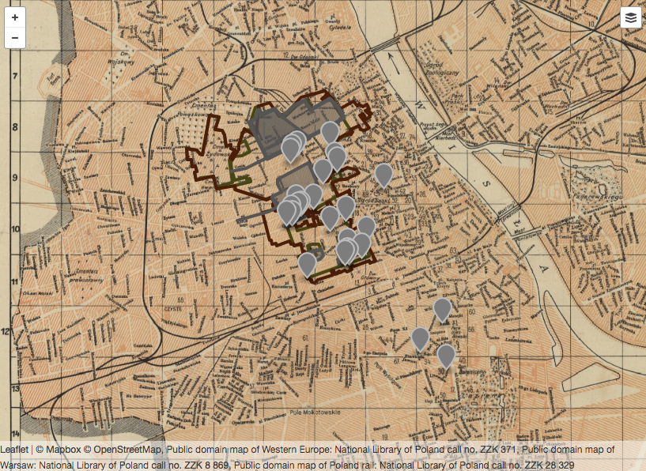

Locating Mary Berg's Diary
Finding Limits in Spatializing a Text of the Warsaw Ghetto
Created by Trip Kirkpatrick / @triplingual
Historic map, diary data, textual interpretation
Finding appropriate maps
Georectifying maps
Adding points, lines, polygons to the map.
Putting it all into a web interface and contextualizing
Why I'm Doing This
To Show Both Time and Space in the Ghetto Experience
To Highlight the Value of Small Data in Digital Humanities Projects
Limits of Representation and the Representation of Limits
What I Think I've Found

Thank You
Credits
- Close-up portrait of Miriam Wattenberg (Mary Berg), [possibly in the Warsaw ghetto].
- Photography, ca. 1940–1945. 2014.405.1. United States Holocaust Memorial Museum. http://collections.ushmm.org/search/catalog/pa1180785.
- Mary Berg Holds up a Newspaper Announcing the Surrender of Germany.
- Photography, May 8, 1945. 2014.405.1. United States Holocaust Memorial Museum. http://collections.ushmm.org/search/catalog/pa1180787.
- Warsaw Ghetto presentation photograph.
- Photography. Accessed May 7, 2017. https://www.baumanrarebooks.com/BookImages/86585.jpg.
- Untitled [Umschlagplatz], 2013
- flickr user mw238 https://www.flickr.com/photos/mw238/9578558154

{kind=link}